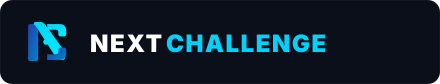
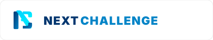
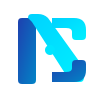
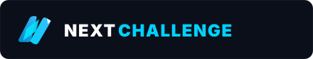
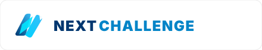
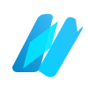
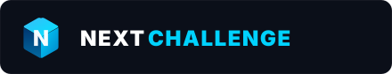
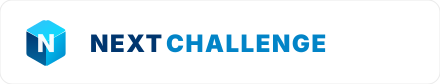
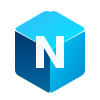

Four genuinely distinct, modern technology logo concepts engineered for nextchallenge.tech. Built with deep navy blue (#00366F) and electric cyan (#00D2FF) for enterprise credibility and digital innovation.
Concept 1 • Minimalist Tech
The Geometric Nexus
NC Monogram
Website Header Lockup (Dark Theme)

Website Header Lockup (Light Theme)

Standalone App & Favicon Scales

56px App Icon
36px Navbar
16px Favicon
Design Rationale
Interlocking precision geometric monogram uniting the letters 'N' and 'C'. Represents connectivity, modular code, and the seamless integration of backend architectures with client digital products.
Color Palette & Font
Plus Jakarta Sans 900 (ExtraBold)
#00366F
#00D2FF
Strengths: Ultra-clean geometric purity; exceptional scalability down to 16px favicon; timeless corporate appeal that never dates.
Tradeoff: Monogram focus means the symbol relies on the accompanying wordmark to communicate the full company name.
Concept 2 • Progress & Ascent
The Kinetic Apex
Forward Chevron
Website Header Lockup (Dark Theme)

Website Header Lockup (Light Theme)

Standalone App & Favicon Scales

56px App Icon
36px Navbar
16px Favicon
Design Rationale
Dynamic angled facets pointing up and forward, forming both a modern 'N' and an ascending arrow. Visually embodies the concept of "Next Challenge" — confronting obstacles, digital acceleration, and overcoming technical boundaries.
Color Palette & Font
Space Grotesk / Jakarta 900
#00366F
#00E5FF
Strengths: High energy, direct visual metaphor for "Challenge" and "Progress"; instantly recognizable forward motion; looks superb in horizontal navbars.
Tradeoff: The sharp dynamic angle requires intentional whitespace padding to breathe comfortably.
Concept 3 • Digital Innovation & AI
The Digital Stack
Cloud & AI Prism
Website Header Lockup (Dark Theme)

Website Header Lockup (Light Theme)

Standalone App & Favicon Scales

56px App Icon
36px Navbar
16px Favicon
Design Rationale
Three-dimensional isometric architecture with an illuminated central core. Symbolizes enterprise software foundations (ERP, Database, Microservices) topped by AI intelligence and Cloud infrastructure.
Color Palette & Font
Plus Jakarta Sans 900 (High-Tech Grotesk)
#00366F
#0369A1
#00E5FF
Strengths: Highly authoritative and architectural; ideal for enterprise B2B software, cloud, and ERP clientele; exceptional depth on dark cards.